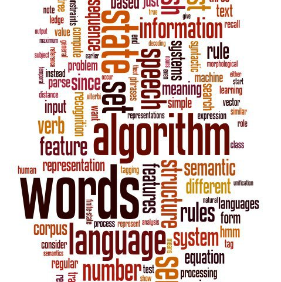

Homepage
Schedule
- Starts: 23/01/2012
- Ends: 18/03/2011
Instructors
- Dan Jurafsky is Professor of Linguistics and Professor by Courtesy of Computer Science at Stanford University. Dan received his Bachelors degree in Linguistics in 1983 and his Ph.D. in Computer Science in 1992, both from the University of California at Berkeley, and also taught at the University of Colorado, Boulder before joining the Stanford faculty in 2004. He is the recipient of a MacArthur Fellowship and has served on a variety of editorial boards, corporate advisory boards, and program committees. Dan's research extends broadly throughout natural language processing as well as its application to the behavioral and social sciences.
- Christopher Manning is an Associate Professor of Computer Science and Linguistics at Stanford University. Chris received a Bachelors degree and University Medal from the Australian National University and a Ph.D. from Stanford in 1994, both in Linguistics. Chris taught at Carnegie Mellon University and The University of Sydney before joining the Stanford faculty in 1999. He is a Fellow of the American Association for Artificial Intelligence, and is one of the most cited authors in natural language processing, for his research on a broad range of statistical natural language topics from tagging and parsing to grammar induction and text understanding.
Description
Natural language processing is the technology for dealing with our most ubiquitous product: human language, as it appears in emails, web pages, tweets, product descriptions, newspaper stories, social media, and scientific articles, in thousands of languages and varieties. In the past decade, successful natural language processing applications have become part of our everyday experience, from spelling and grammar correction in word processors to machine translation on the web, from email spam detection to automatic question answering, from detecting people's opinions about products or services to extracting appointments from your email. In this class, you'll learn the fundamental algorithms and mathematical models for human language processing and how you can use them to solve practical problems in dealing with language data wherever you encounter it.
Include
- screencast lecture videos
- quiz questions
- assignments
- exams
- regular feedback
- discussion forum
Provides
- word and sentence tokenization
- text classification
- sentiment analysis
- spelling correction
- information extraction
- parsing
- meaning extraction
- question answering
- underlying theory from probability, statistics, machine learning that are crucial for the field
- fundamental algorithms like n-gram language modeling, naive bayes, maxent classifiers
- sequence models like Hidden Markov Models
- probabilistic dependency and constituent parsing
- vector-space models of meaning.
Requires
- probability (know Bayes rule)
- vectors and vector spaces (could length normalize a vector)
- calculus (know that the derivative of a function is zero at a maximum or minimum of a function)
- programming ability (know about hash tables and graph data structures)
- knowledge of Java or Python
Bibliograpy
- lectures and notes
- Jurafsky and Martin, Speech and Language Processing 2nd Edition
- Manning, Schütze and Raghavan 2008
- Manning and Schütze 1999
- Klein and Loper 2009